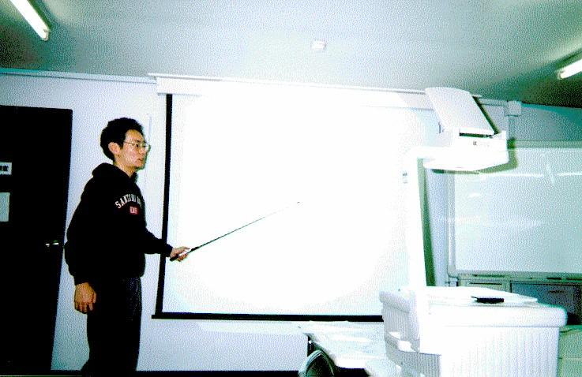

UML(Unified Modeling Language)は、ラショナル・ソフトウェア (Rational Software)他数社により開発された、統一モデリング言語であり、 ソフトウェアの計画、分析、設計、実装などの支援を目的としている。UMLの 利用により作成されたソフトウェアは、プロジェクト全体の掌握や整合性のチェッ ク、保守を容易にすることが期待される。
しかし、UMLは比較的最近になって仕様が定められたこともあり、既存の ソフトウェアはUMLを利用しないで作成されたものが大部分を占める。そのよう なソフトウェアの中にはドキュメントや仕様書が不備であったり、あるいはソー スコードしか残されていないものなども存在する。
これらのソフトウェアを保守管理するには、ソースコードを解析し、そこ から読み取れるソースコード間の依存関係、モジュール全体の構造やひいては 要求仕様などの割り出しといった、いわゆるリバースエンジニアリングが必要 となってくる。
UMLを利用したリバースエンジニアリングとは、ソースコードなどの最終成 果物を基にUMLの様々な図式を生成することである。そのために、まずUMLを利 用した開発プロセスを逆に辿り、リバースエンジニアリングがどの程度可能か を検討する。
言語であるが，図を多用する．図についても規定がある．UMLは図の書き方 及び図の表すセマンティクスが定義されている言語でセマンティクスはUML自 身で記述する。しかし最終的には人間のわかる形の意味を与えなければならな い。そこで、UMLではセマンティクスを記述するため、OCL(Object Constraint Language)と呼ばれる一階述語論理のような言語で、オブジェクト間の制約な どを表す。
structured programmingは、非構造化言語で書かれた言語を構造化プログ ラミングの要素（連接、選択、反復）からなるように再構成するもので、主な 作業はgoto文をなくすことである。public変数をなくすなどはstructured programmingをオブジェクト指向に発展させた 形といえよう。しかし、クラス 毎の役割の再分担などは、goto文をなくすといったほど明確ではなく、ユーザ の要求に依存して、一意でないプログラムに変形される。
メソッド内にあるif文の真部と偽部を各サブシナリオとみなすことによっ て、メソッドの役割を細分化する。それらサブシナリオには名前がついている のが普通であるが、if文の内部を解析しただけで、適当な名前をツールが自動 的につけるのは困難であるので、名前が必要ならばユーザによる名前の問い合 わせを行なうとよい。
今回はGUIのイベントをユースケースに写像させたので、ユースケース間の 関係は単純にはわからない。ただし、状態遷移図などを用いて、あるイベント の後にはこのイベントが起こる、といったイベント間の関係をユースケース間 の関係に写像することができる。しかし状態遷移図そのものの機械的抽出が難 しいため、ユーザが与える必要があるかもしれない。
クラスのある特定のメンバ変数のインスタンスだけにアクセスしているメ ソッドがある場合、そのメンバ変数のクラスを拡張し、メソッドを追加する。
例：
class A {
B b;
void plusB() {
b.x++;
b.y++;
}
}
これを以下のように変更
class A {
B2 b;
}
class B2 extends B {
void plus() {
x++;
y++;
}
}
このようにして、機能を分離していくことも可能であると思う。
「このクラスはあのライブラリに属している」というような情報を与えら れればライブラリ、つまりカテゴリ別に１つのクラスを分割できることが期待 される。 Javaの場合はパッケージの概念により、分割は容易である。ユーザ が作成したプログラムでも、既に解析がすんでいる部分のモジュールに関して は、ライブラリ同様、知識を利用して素早く対応できる。
プログラマの癖によっては検出できない可能性がある。様々な人が書いた 様々なプログラムを解析する必要がある。または、プログラマ毎の癖を自動的 に学習して、プログラマの意図を汲み取るシステムならば理想である。
実際、プログラムを見ただけで要求仕様までを解析するのは不可能に近い。 UMLによる図であれば、プログラミングとモデリングに違いはあっても言語で あるので、まだ対応がつけられる。
今考えているシステムは、基本的に完全自動化を目指しているものではな く、例えばプログラムの変形が起こるような場合で、プログラムの意味が変わ る可能性のある場合はユーザへの問い合わせを行う。プログラム量が膨大にな ると人間にとっても大変であるが、作業の方向性をツールが示してくれるので 人間の負担を減らすことはできる。
 発表の様子